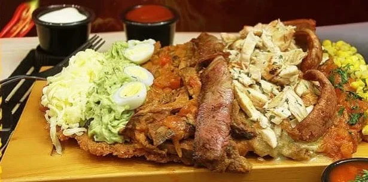
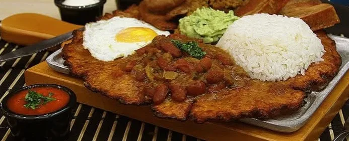
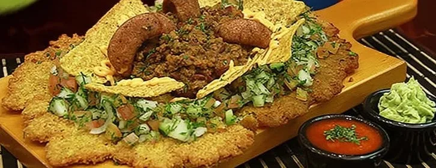
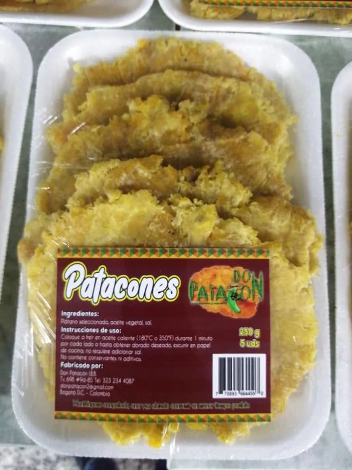
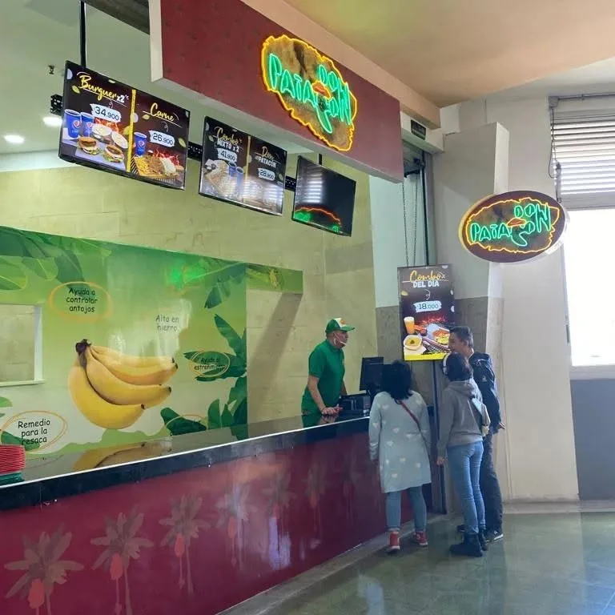

Más crujiente y sabrosón
Patacones grandes, con todo encima, en la plazoleta de comidas del Centro Comercial Plaza Central.
- Dónde
- Local 3-48, plazoleta de comidas
- Horario
- Por confirmar
- Cortamos el plátano verde
- Lo freímos una vez
- Lo aplastamos en la pataconera
- Lo freímos otra vez hasta que cruja
Así de crujiente te espera en el 3-48.

Los que más piden
Verde crocante o maduro dulce: todos los patacones vienen como prefieras.
-

Don Patacón
El de la casa: carne en salsa, pollo desmechado, chorizo, maíz, guacamole, queso y huevos de codorniz.
$31.900 -

Paisa
Fríjoles, arroz, huevo frito, chicharrón, chorizo y guacamole.
$32.900 -

Mexicano
Carne molida, chorizo, nachos, pico de gallo y queso cheddar.
$28.900 -
Combo Mixto x2
Patacón mixto para compartir, con papas a la francesa y dos gaseosas.
$49.900

Llévalos a casa
Patacones listos para freír. Cada bandeja trae 5 unidades (250 g), sin conservantes.
- Calienta el aceite a 180 °C.
- Fríelos 1 minuto por cada lado, hasta que doren.
- Escúrrelos en papel de cocina. No necesitan sal.
Los consigues en el local 3-48.
Cómo llegar
- Entra al Centro Comercial Plaza CentralBogotá
- Sube al piso 3Escaleras eléctricas o ascensor
- Busca la plazoleta de comidasSomos el local 3-48
- Mira el aviso verde de neónAhí te esperamos
